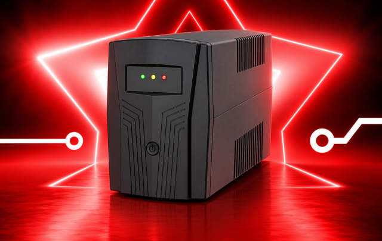

Teknik özellikler için ürün dokümanını indirin.
Elektrik kesintisinde asansör kurtarma sistemini besleyen, pik akımlara uygun yazılımlı 1500 VA line-interactive asansör UPS'i. Giriş ve çıkış kabloları uçları açık olarak bağlantıya hazır gelir.
| Güç | 1500 VA |
|---|---|
| Uygun motor gücü | 5,5 kW / 7,5 kW / 11 kW |
| Kurtarma adedi (tam akü) | 5,5 kW: 5 kez · 7,5 kW: 4 kez · 11 kW: 2 kez |
| Giriş | 220 Vac (116–276 Vac), 50 Hz ± %10 |
| Transfer süresi | < 10 ms |
| Akü | 2 adet 12 V 9 Ah kuru tip, tam bakımsız |
| Akü koruması | Şebeke yokken kurtarma sonrası 7 dakikada otomatik kapanma |
| Diğer | Cold start, AVR, otomatik sigorta, sesli alarm |
| Garanti | 2 yıl cihaz, 10 yıl yedek parça |
Tüm değerler ürün dokümanından alınmıştır; ayrıntılar için dokümanı indirebilirsiniz.
Teklif için asansör motor gücünü, kurtarma sistemi markasını ve bina adresini paylaşın; uyumluluğu teknik ekibimiz kontrol eder.
Teklif için şu bilgileri paylaşmanız yeterli: beslenecek cihazlar veya toplam güç, elektrik kesildiğinde istenen çalışma süresi, binadaki faz yapısı ve İstanbul'daki kurulum adresi. Çekmeköy merkezimizden İstanbul genelinde satış, kurulum, devreye alma ve bakım desteği veriyoruz.
WhatsApp'tan teklif isteyin Teklif formu 0542 256 80 03
UPS seçim ve kVA hesaplama rehberi · UPS bakım hizmetleri · Diğer UPS modelleri

Teknik özellikler için ürün dokümanını indirin.